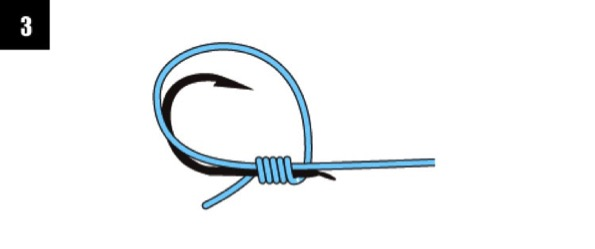

基础鱼钩绑法
东方人以用铲钩为主，钩把部分为扁平而略有角度的板状区。西方人习惯使用带钩眼的环眼钩，环眼钩使用转环结即可使用，下面为大家介绍一下扁平钩的绑法。
一、外挂结
- 将线端对折，如图所示搭在钓钩上
- 将线端如图2所示缠绕钩柄，形成线圈
- 线端如图3所示将钩柄和子线缠绕在一起，持续5-6圈左右
- 线端折返从图2所示的对折缠绕形成的线圈中穿出
- 调整子线放置在钓钩的内侧，并缓慢拉紧线结，剪除线端的多余部分
二、内挂结
- 线端依着钩柄缠绕出小线圈
- 将线端把钩柄和线圈缠绕起来
- 如图3所示，缠绕7-8圈左右即可
- 调整子线放置在钩柄内侧，并缓慢拉紧
- 如图5所示方向，拉紧线结
- 剪除线端多余的部分即可（如果子线位置不当，需再次调整子线在钩柄内侧）


三、变形外挂结
- 将线端搭在钓钩上，依着柄钩缠绕出小线圈
- 线端如图2所示缠绕钩柄和子线2圈
- 第3圈是线端单独缠绕钩柄
- 线端再依次缠绕钩柄和子线2-3圈左右
- 如图所示方向，缓慢拉紧线结，剪除线端多余部分即可
四、串钩绑法
五、注意事项
绑钩时要注意安全，在绑钩环节经常会出现“润滑”字样，这是绑钩最后环节可以通过唾液或者水弄湿线结，起到一定的润滑作用，从而更容易将线结拉紧。特别是在润滑环节，要小心，千万不要鱼没上钩，把自己先给钩上了。
绑钩结的时候，应当在最后绕圈时如图所示调整线结和子线位置。这样大大减少线结滑动或者断裂，也降低了大鱼跑钩的机率。
扫一扫分享